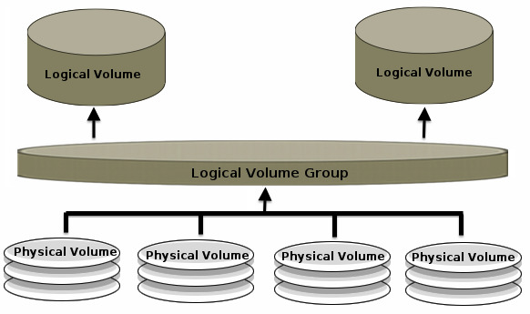

Storage
Architecture

The Storage block of architecture builds on both the Hardware and Software blocks because digital storage comprises a combination of hardware and software components. The storage drives represent the storage hardware, and file and database systems represent the storage software. Together, storage hardware and software serve to operationalize the Storage step in the information life cycle.
Types of Storage Systems
- File systems store data in separate files and folders.
- Database systems store all data in a single location.
These two storage systems predate digital storage. Paper documents and folders in a filing cabinet is a physical file system, and a card catalog in a library is an example of a physical database system. The same principles apply to digital storage, and although the software portion of digital storage is the most visible from the users' perspective, the storage system begins with hardware. Digital storage hardware is analogous to the filing cabinet in a physical file system.
Physical and Logical Volumes
Digital storage begins with the physical storage drive. Data on the drive is stored in either a physical or a logical volume. A physical volume, or partition, uses all or part of the storage capacity of a single drive. Physical volumes are static, so they cannot grow as storage needs increase. Logical volumes are more flexible. Logical volumes are formed by combining one or more physical volumes into a volume group. Volume groups can comprise one or more storage drives. One or more logical volumes are formed from the storage capacity in the volume group. As long as the volume group has free space, existing logical volumes can expand to include more storage from the volume group. Volume groups are also resizable. Additional physical volumes can be added to an existing volume group to increase available storage capacity.
From Physical to Logical
(Image courtesy of Sarmed Rahman CC-BY 2.0)
File Systems
The physical or logical volume is formatted with a file system. File systems provide the hierarchical folder structure common in desktop operating systems. The operating system and other applications are stored on the file system. Virtually all programs use file systems to communicate with and store data on a storage volume because of the convenience and familiarity, and interoperability of file systems. Additionally because the file system is separate from the operating system, file systems are interoperable and users can remove a storage drive from one computer and access the file system on another computer.

From File System to Database System
The role of a database system is to collate data and present it in a centralized manner. In the example of the library card catalog, a physical database system functions as an alternative to a file system. However, in digital storage, this is not the case. A digital database system is an application, which runs on an operating system, which sits on a file system. In the current computing world, database systems are not an alternative to file systems, rather they collate data stored on a file system and present it as if it were stored in a centralized manner. Many software applications are database systems. Music players are a common example. The individual song files are stored in separate files and folders on a file system. The music player collates the songs and provides the user with a single library.
Flat File Databases
The simplest databases are flat files. A flat file database is a single file that contains only data with each row representing a single record. Spreadsheets and comma- or tab-delimited files (CSV or TXT) are examples of flat files. In flat file databases, all data is stored in a single table. These are popular for storing small datasets because they place no restrictions on the form of the data. As a result, adding additional records tends to be quick and easy. Additionally, many users are familiar with applications that read flat files, such as Microsoft Excel. The largest drawback of flat files is an inability to create relationships between data in different tables. Additionally, flat file databases have none of the functionality necessary to support data integrity in a large-scale enterprise-grade information system.
Relational Databases
Many database systems for storing business data are relational databases. Each relational database contains one or more two-dimensional tables. The technical name for a table is a relation, hence relational database. These tables are similar to spreadsheets found in office software.
The individual rows in the relations are called records or tuples. The individual columns are called attributes or fields. The intersection of a row and a column is a cell. Cells hold a single value.
Database Components
In a relational database, each table or relation represents an entity, which is either a person (e.g., Customer or Employee), an account (e.g., Inventory or Notes Payable) or a data object (e.g., Invoice or Purchase Order). Rows or records represent instances of an entity (e.g., a specific customer or a specific invoice). Columns or attributes represent characteristics of an entity (e.g., customer name or inventory SKU). Cells represent characteristics of an instance (e.g., the address of a specific employee or the date on a specific invoice). This structure is no different from the structure of a flat file database. However, the strength of a relational database is in the relationships between the database tables. Relationships between tables represent interactions between entities.
Primary Keys
Each record in a table must have a unique identifier. Without it, it would not be possible to locate and retrieve a specific instance of an entity. This unique identifier is a primary key. Frequently, a primary key is a single entity attribute. It may be a characteristic inherent to an entity (e.g., telephone number, user login, SSN, etc.), or it may simply be an incremented ID number (e.g., 00001, 00002, 00003, etc.). As a unique identifier, each value of a primary key can only occur once per table. Sometimes no single attribute uniquely identifies an instance of an entity. For example, neither Semester nor Year nor Course Name nor Section uniquely identify an instance of a course, but the combination of Semester and Year and Course Name and Section can. Primary keys that comprise multiple attributes are composite keys.
Data Types
All cells for a single attribute must have the same data type. This type determines the characteristics of the data, as well as any available operations.
Numerical data types support arithmetic and statistical functions, such as addition, subtraction, and average. String data types support pattern matching. Date types and numerical types both support comparisons (e.g., greater than or less than).
Foreign Keys
Because primary keys uniquely identify an instance of an entity, they also serve to link entities together to implement relationships. Creating a relationship between two tables in a relational database involves taking the primary key from the table that represents the acting entity and placing it in the table that represents the entity being acted upon as a foreign key. A foreign key is a special attribute that can only take values of the primary key it links to, in order to show which instance of one entity acts upon which instances of the other. For example, the Employee entity might include Employee ID as a primary key. The Employee entity and the Sales Order entity have a relationship because Employee creates Sales Order. The Sales Order would include Employee ID as a foreign key to identify the Employee instance who created the sales order instance.
SQL
Structured Query Language (SQL) is the language for interacting with relational databases to create, modify, and retrieve data. Because of the prevalence of relational databases and because of the simplicity of its syntax, SQL has been and continues to be a popular tool, and an increasing number of Big Data and data analytics systems have added support for this language.
A query is a single request for data. An SQL query SELECTs a certain number of attributes FROM one table or multiple tables by JOINing the tables ON common attributes (e.g., primary and foreign keys). SQL can limit the records returned by the query to only those WHERE a specific condition is true. Results can be ORDERed BY an attribute's values in either ascending or descending order.
SQL Rules
SQL syntax is not complicated, but it has certain strict rules, and SQL is not tolerant of syntax errors:
- SQL queries can span multiple lines, but they always end in a semicolon.
- Attribute lists in a SELECT statement are comma-delimited with no comma after the final attribute in the list before the FROM statement.
- WHERE statements use a boolean test which can be > (greater than), < (less than), = (equal), != (not equal), or IS NULL (missing value). If the data type of the variable is a string type, then the test value must have quotes around it (e.g., NAME = 'John').
- When using ORDER BY, it must be at the end of the query.
SQL Analysis
Basic SQL queries serve primarily to retrieve data for subsequent analysis. However, SQL can also perform some data analysis by calculating descriptive or summary statistics on table attributes. Summary statistics summarize a set of records. COUNT returns the number of records; SUM adds the values of a numerical attribute together; MIN, MAX, and AVG return the minimum, maximum, and average values of a numerical attribute, respectively. The query can calculate these statistics for an entire dataset or GROUPed BY an attribute's values. When grouping results, the query returns a summary statistic for each group. The query can also filter the results by selecting only those groups HAVING a specific condition (similar to a WHERE statement).
Indexing
In order to increase the speed of queries from a relational database, a relational database management system (RDBMS), which is software that manages a relational database, can create an index of the values in the tables. This index is similar to the index in the back of a textbook. When looking for records that match a particular value, such as a customer name, the RDBMS can find the value in the index, and the index will report which database records contain that value. This is quicker than looking through all records to find those with the desired value, just as it is quicker to use the index in a book to find pages that reference a certain topic than it is to look through the entire book to find references to that topic.
OLAP
Online analytical processing (OLAP) is another method for increasing query speed. OLAP creates either a pre-calculated hypercube (MOLAP) or a series of interconnected relational tables (ROLAP) from a existing database. Users can then quickly perform multidimensional queries, such as sales by quarter by location, with the added ability of rolling up for an aggregated view (e.g., sales by year by location), drilling down for a granular view (e.g., sales by month by location), and slicing and dicing to filter results along a dimension (e.g., sales for Q1 by location).
Non-relational Databases
For several decades, RDBMSs have been the data store of choice for business data. However, Web commerce has created the need for database solutions that can add data quickly and can increase in size to accommodate very large datasets. These solutions fall into a class of non-relational databases, also called NoSQL. These databases abandon the principles of relational databases in favor of alternative models. Many NoSQL databases are key-value stores.
A key-value store pairs unique keys with data objects. The data object can be anything from a single number to an entire file. The role of the key-value store is to facilitate efficient storing and retrieval of values (i.e., data objects) by their keys. Two common types of key-value stores are document stores and column stores.
Document Store
A document store is a key-value store in which the data object is a text file with multiple metadata attributes and values, frequently in XML or JavaScript Object Notation (JSON) format. Instead of storing the individual values as fields in a record of a relational table, a document store keeps all values together in a single data object.
Column Store
A column store groups individual keys and values into columns and then combines columns into families. A column is similar to an attribute, and a family is similar to a record. Unlike records in relational tables, different families can have different numbers of keys (i.e., attributes), and the values from the same key in different families can have different data types.
Graph Database
With the advent of social media, graph databases have become a popular NoSQL model. A graph database uses nodes, edges, and properties to emphasize the relationships between objects. Each node is an object with one or more attributes similar to a row in a relational database. Edges connect nodes to describe how nodes relate to one another. Graph databases are similar to relational databases, but the emphasis is on the relationships.

Benefits of NoSQL Databases
- Volume: Because of the simplicity of each record in the database, NoSQL databases are designed to store many more records than their relational counterparts.
- Velocity: Relational databases must find each field, perhaps across multiple tables, to add and retrieve records. NoSQL databases take the data input and simply append it to the end of the store.
- Variety: Unlike relational databases which primarily store simple data types, NoSQL databases can store any data object. As a result, they are useful for pairing metadata with supporting documentation (e.g., invoice information with a scanned image of the original paper invoice).
Just So Fresh And Clean
Accountants have a long tradition of storing economic data in paper journals and ledgers. Databases have replaced paper journals and ledgers, but databases are more than digital ledgers. Flat file databases are popular because of their ease of use, but they have drawbacks over relational and NoSQL databases. Relational databases promote data integrity by grouping data by entity and by requiring attributes to have a uniform data type. Clean data from well-designed relational databases results in better analytics. NoSQL databases promote eCommerce and Big Data analytics by storing and retrieving larger datasets faster. Proper storage solutions are necessary for data retrieval and analysis that results in reports for internal and external stakeholders that effectively support strategic decision making.